Cam Lever Couplings
Harrington is a leading supplier of high-quality cam lever couplings. Our extensive selection includes a variety of brands, styles, connection types, materials, and specifications. Cam lever couplings are designed for connecting hoses or pipes that transfer liquids, powders, and granules. Available materials include Polypropylene, Glass-Filled Polypropylene, and Stainless Steel. Choose your product to request a quote, obtain additional information, and explore purchasing options.
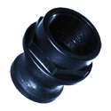
per EA · Sign in for price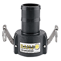
Banjo 050C 3/4" x 1/2" Black Glass-Filled Polypropylene Cam and Groove Coupling, Type C Female Camlock x Hose Shank Ends, EPDM Sealper EA · Sign in for price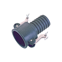
Bee Valve 050-C 1/2" Black Heavy Duty Glass-Reinforced Polypropylene Cam and Groove Coupling, Type C Female Camlock x Hose Shank Ends, EPDM Sealper EA · Sign in for price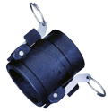
Banjo 050D 3/4" x 1/2" Black Glass-Filled Polypropylene Cam and Groove Coupling, Type D Female Camlock x FPT Ends, EPDM Sealper EA · Sign in for price- Bee Valve 050-D 1/2" Black Heavy Duty Glass-Reinforced Polypropylene Cam and Groove Coupling, Type D Female Camlock x FPT Ends, EPDM Sealper EA · Sign in for price
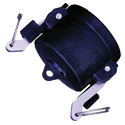
Bee Valve 050-DC 1/2" Black Heavy Duty Glass-Reinforced Polypropylene Cap with Female Camlock Arms, EPDM Sealper EA · Sign in for price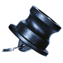
Bee Valve 050-DP 1/2" Black Heavy Duty Glass-Reinforced Polypropylene Plugper EA · Sign in for price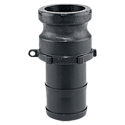
Banjo 050E 3/4" x 1/2" Black Glass-Filled Polypropylene Cam and Groove Adapter, Type E Male Adapter x Hose Shank Endsper EA · Sign in for price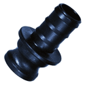
Bee Valve 050-E 1/2" Black Heavy Duty Glass-Reinforced Polypropylene Cam and Groove Adapter, Type E Male Adapter x Hose Shank Endsper EA · Sign in for price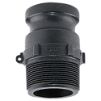
Banjo 050F 3/4" x 1/2" Black Glass-Filled Polypropylene Cam and Groove Adapter, Type F Male Adapter x MPT Endsper EA · Sign in for price- Bee Valve 050-F 1/2" Black Heavy Duty Glass-Reinforced Polypropylene Cam and Groove Adapter, Type F Male Adapter x MPT Endsper EA · Sign in for price
- Bee Valve 075-A 3/4" Black Heavy Duty Glass-Reinforced Polypropylene Cam and Groove Adapter, Type A Male Adapter x FPT EndsCall for availabilityAsk a branch
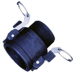
Bee Valve 075-B 3/4" Black Heavy Duty Glass-Reinforced Polypropylene Cam and Groove Coupling, Type B Female Camlock x MPT Ends, EPDM Sealper EA · Sign in for price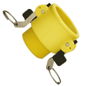
Bee Valve 075B-N 3/4" Yellow Glass-Filled Nylon Cam and Groove Coupling, Type B Female Camlock x MPT Ends, EPDM Sealper EA · Sign in for price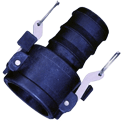
Banjo 075C 3/4" Black Glass-Filled Polypropylene Cam and Groove Coupling, Type C Female Camlock x Hose Shank Ends, EPDM Sealper EA · Sign in for price- Bee Valve 075-C 3/4" Black Heavy Duty Glass-Reinforced Polypropylene Cam and Groove Coupling, Type C Female Camlock x Hose Shank Ends, EPDM Sealper EA · Sign in for price
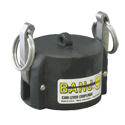
Banjo 075CAP 3/4" Black Glass-Filled Polypropylene Cap with Female Camlock Arms, EPDM Sealper EA · Sign in for price- Banjo 075D 3/4" Black Glass-Filled Polypropylene Cam and Groove Coupling, Type D Female Camlock x FPT Ends, EPDM Sealper EA · Sign in for price
- Bee Valve 075-D 3/4" Black Heavy Duty Glass-Reinforced Polypropylene Cam and Groove Coupling, Type D Female Camlock x FPT Ends, EPDM Sealper EA · Sign in for price
- Bee Valve 075-DC 3/4" Black Heavy Duty Glass-Reinforced Polypropylene Cap with Female Camlock Arms, EPDM Sealper EA · Sign in for price
- Bee Valve 075-DP 3/4" Black Heavy Duty Glass-Reinforced Polypropylene Plugper EA · Sign in for price
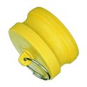
Bee Valve 075DP-N 3/4" Yellow Glass-Filled Nylon Plugper EA · Sign in for price- Banjo 075E 3/4" Black Glass-Filled Polypropylene Cam and Groove Adapter, Type E Male Adapter x Hose Shank Endsper EA · Sign in for price
- Bee Valve 075-E 3/4" Black Heavy Duty Glass-Reinforced Polypropylene Cam and Groove Adapter, Type E Male Adapter x Hose Shank Endsper EA · Sign in for price
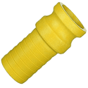
Bee Valve 075E-N 3/4" Yellow Glass-Filled Nylon Cam and Groove Adapter, Type E Male Adapter x Hose Shank Endsper EA · Sign in for price- Bee Valve 075-F 3/4" Black Heavy Duty Glass-Reinforced Polypropylene Cam and Groove Adapter, Type F Male Adapter x MPT Endsper EA · Sign in for price
- Banjo 100125CAP 1" Black Glass-Filled Polypropylene Cap with Female Camlock Arms, EPDM Sealper EA · Sign in for price
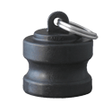
Banjo 100125PL 1" Black Glass-Filled Polypropylene Plugper EA · Sign in for price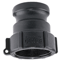
Banjo 100A 1" Black Glass-Filled Polypropylene Cam and Groove Adapter, Type A Male Adapter x FPT Endsper EA · Sign in for price- Bee Valve 100-A 1" Black Heavy Duty Glass-Reinforced Polypropylene Cam and Groove Adapter, Type A Male Adapter x FPT Endsper EA · Sign in for price
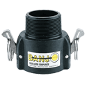
Banjo 100B 1" Black Glass-Filled Polypropylene Cam and Groove Coupling, Type B Female Camlock x MPT Ends, EPDM Sealper EA · Sign in for price- Bee Valve 100-B 1" Black Heavy Duty Glass-Reinforced Polypropylene Cam and Groove Coupling, Type B Female Camlock x MPT Ends, EPDM SealCall for availabilityAsk a branch
- Bee Valve 100B-N 1" Yellow Glass-Filled Nylon Cam and Groove Coupling, Type B Female Camlock x MPT Ends, EPDM Sealper EA · Sign in for price
- Banjo 100C 1" Black Glass-Filled Polypropylene Cam and Groove Coupling, Type C Female Camlock x Hose Shank Ends, EPDM Sealper EA · Sign in for price
- Bee Valve 100-C 1" Black Heavy Duty Glass-Reinforced Polypropylene Cam and Groove Coupling, Type C Female Camlock x Hose Shank Ends, EPDM Sealper EA · Sign in for price
- Banjo 100D 1" Black Glass-Filled Polypropylene Cam and Groove Coupling, Type D Female Camlock x FPT Ends, EPDM Sealper EA · Sign in for price
- Bee Valve 100-D 1" Black Heavy Duty Glass-Reinforced Polypropylene Cam and Groove Coupling, Type D Female Camlock x FPT Ends, EPDM Sealper EA · Sign in for price
- Bee Valve 100-DC 1" Black Heavy Duty Glass-Reinforced Polypropylene Cap with Female Camlock Arms, EPDM Sealper EA · Sign in for price
- Bee Valve 100-DP 1" Black Heavy Duty Glass-Reinforced Polypropylene Plugper EA · Sign in for price
- Banjo 100E 1" Black Glass-Filled Polypropylene Cam and Groove Adapter, Type E Male Adapter x Hose Shank Endsper EA · Sign in for price